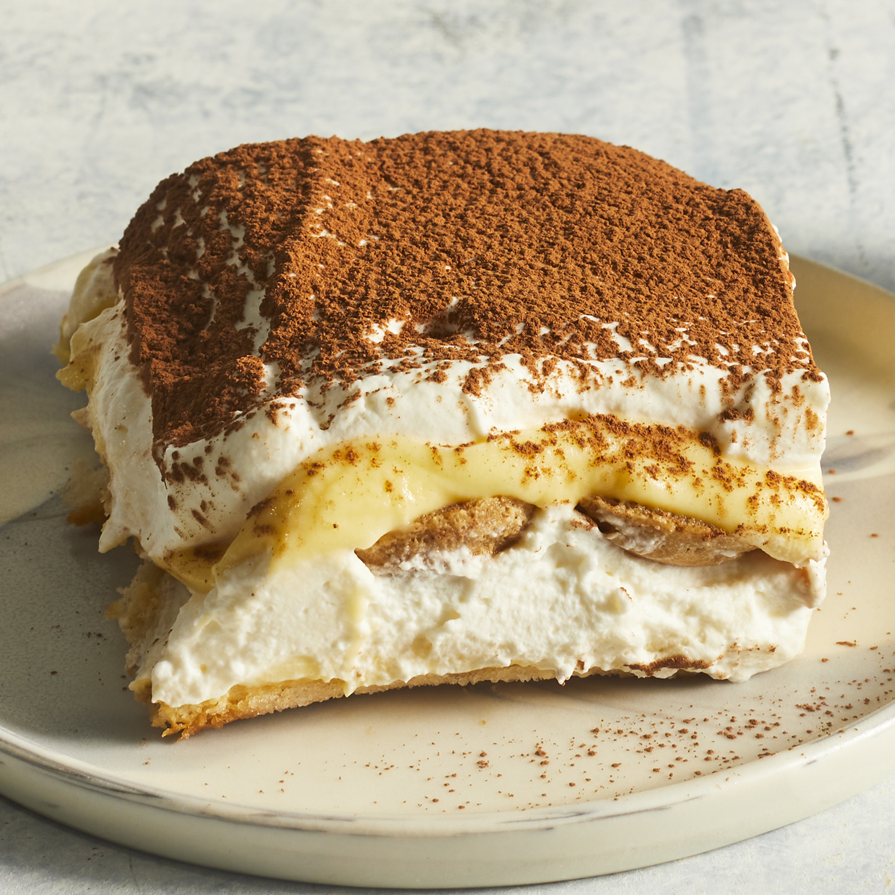

Tiramisu

Description of the dish
This tiramisu recipe shows you how to make the classic Italian layered dessert at home with rum-flavored,
coffee-soaked ladyfingers, a creamy mascarpone custard, and whipped cream.
The top of this tiramisu is dusted with cocoa powder for an impressive no-bake dessert.
Tiramisu has Italian origins. The famous Italian restaurateur Ado Campeol
is credited with its invention in the 1970s. In fact, he was widely known as "the father of tiramisu.
" The word "tiramisu" translates to "pick-me-up."
It's also much more healthier then the conventional lasagna made from
traditional ingridients.
Ingridients
- 1 (16 ounce) package lasagna noodles
- 2 tablespoons vegetable oil
- 1 pound fresh mushrooms, sliced
- ¾ cup chopped green bell pepper
- ¾ cup chopped onion
- 2 eggs
- ½ cup grated Parmesan cheese
- Your favourite spices
Steps to cook
- Cook lasagna noodles in a large pot of boiling water for 10 minutes, or until al dente.
Rinse with cold water, and drain.
- Heat oil in a large saucepan.
Cook and stir together mushrooms, green peppers, onion, and garlic until tender, about 5 minutes.
Stir in pasta sauce and basil; bring to a boil. Reduce heat, and simmer 15 minutes.
- While the sauce is simmering, mix together ricotta,
2 cups mozzarella cheese, and eggs in a medium bowl.
- Preheat the oven to 350 degrees F (175 degrees C).
- Spread 1 cup cooked tomato and vegetable sauce into the bottom of a greased 9x13-inch baking dish.
Lay down half of the lasagna noodles and layer half each ricotta mix, sauce, and Parmesan cheese on top.
Repeat layering again with noodles, ricotta mix, sauce, and Parmesan cheese.
Top with remaining 2 cups mozzarella cheese.
- Bake, uncovered, for 40 minutes. Let stand 15 minutes before serving.